RAMPSHARP - Iterative ramp sharpening of multispectral images.
Contents
Description
Perform (multispectral) image enhancement through iterative local ramp sharpening as described in [GS10].
Syntax
[SH,TR] = RAMPSHARP(I);
[SH,TR] = RAMPSHARP(I, niter, method, sigma, rho);
[SH,TR] = RAMPSHARP(I, niter, method, sigma, rho,
'Property', propertyvalue, ...);
Inputs
I : input image with dimension C, possibly multispectral (C>1 bands).
*niter: optional positive parameter setting the number of iterations of the sharpening algorithm; when |niter=0, the sharpening is iterated till convergence; default: niter=1.
method :
sigma : pre-smoothing width (half-window size in pixels); this parameter sets the differentiation scale in the case the image is smoothed prior to the differentiation through Gaussian filtering; sigma typically controls the size of the objects whose orientation has to be estimated; default: sigma=0.5, i.e. Gaussian regularisation is used for estimating the derivatives.
rho : post-smoothing width (half-window size in pixels); this parameter sets the integration scale for spatial averaging, that controls the size of the neighbourhood in which an orientation is dominant; it is used for averaging the partial directional derivatives of the tensor with a Gaussian kernel; if rho<0.05, then no smoothing is performed; default: rho=0.5.
der : flag defining the original (3,3) gradient mask used for estimating the directional derivatives of the input image; it is either (see GRADMASK):
- 'sob' for Sobel mask,
- 'dif' for central differences,
- 'for' when forward differences are computed,
- 'bac' when backward differences are computed,
- 'pre' for Prewitt mask,
- 'iso' for Frei-Chen's isotropic mask,
- 'opt' for Ando's optimal mask,
- 'cir' for Davies' circular mask;
default: der='dif'.
Property [propertyname propertyvalues]
'pilot' :
'alpha' : flag setting the correction factor alpha when updating a pixel value; the correction alpha is based on the estimated gradient indices 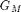, 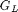 and 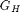 (see [Leu00]) for further definition of the gradient indices); therefore, alpha is expected to be either:
- 'f0' then 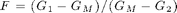 (following [Leu00]),
- 'f1' then 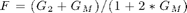, (default)
- 'f2' then ,
- 'f3' then 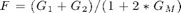,
- 'f4' then 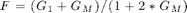,
- 'f5' then 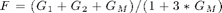,
where 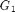 and 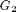 stand for either or , depending on which part of of the ramp (lower or higher) the pixel belongs to.
'fE' : optional parameter setting the factor effect (see [Leu00]) as a multiplicative effect on the correction factor, so that: 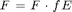.
'win' : set the parameters of the local kernel windows used for estimating the local gradient and intensity indices
- 'w0' : the kernel weights are identical to those of Leu's approach,
- 'w1' : new kernel weights.
'adjust' : 'shift' or 'control'
'crit' : optional flag for deciding how vectorial
components are taken into account in the ramp decision, depending on the
estimated intensity indices 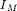,
 and 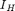
(see [Leu00]) for further definition of the intensity indices); it
provides the adju for deciding when a (vector) pixel has to be
considered as a ramp pixel - useful only when C>1; it is
either:
and 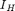
(see [Leu00]) for further definition of the intensity indices); it
provides the adju for deciding when a (vector) pixel has to be
considered as a ramp pixel - useful only when C>1; it is
either:
- 'all': then for each pixel, we check if it exists one band where
its is greater than
its and its
is greater than its ,
and we verify that there is no band where its
is lower than its or
its is lower than its
, ie.: 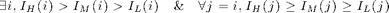
note that in the case nc=1, the previous condition is equivalent to that proposed in [Leu00],
- 'one': it is enough that the relationship regarding neighbour
pixels intensity is verified in one channel to perform the local
adjustment, ie.:

(more flexible than the previous option in the multispectral case, equivalent in the monospectral one)
'derive' :
* |'grd'|
* |'tens'|
'sigma' :
'rho' :
'hsize' : optional filter size; default: estimated depending on sigma, typically hsize=6*sigma+1.
'eigen' :
samp : to perform (*samp) interpolation of the gradient to avoid aliasing.
Outputs
SH :
TR : transition map, where a positive graylevel intensity indicates the last iteration the pixel was detected as a transition
References
[Leu00] J.G. Leu: "Edge sharpening through ramd width reduction", Image and Vision Computing, 18: 501-514, 2000. http://www.sciencedirect.com/science/article/pii/S0262885699000414
[GS10] J. Grazzini and P. Soille: "Iterative ramp sharpening for structure/signature-preserving simplification of images", Proc. ICPR, 2010. http://ieeexplore.ieee.org/xpls/abs_all.jsp?arnumber=5597348
Function implementation
function [SH,TH,pl, pch] = rampsharp(I,varargin)
error(nargchk(1, 33, nargin, 'struct')); error(nargoutchk(1, 4, nargout, 'struct'));
parsing parameters
if ~isnumeric(I) error('rampsharp:errorinput','a matrix is required in input'); end % Optional parameters p = createParser('RAMPSHARP'); % create an instance of the inputParser class. % mandatory (required) variables %p.addRequired('I', @isnumeric); % principal optional parameters p.addOptional('niter', 1, @(x)isscalar(x) && x>=0); p.addOptional('method', 'control', @(x)ischar(x) && ... any(strcmpi(x,{'shift', 'leu', 'control'}))); p.addOptional('sigma', 0.5, @(x)isscalar(x) && isfloat(x) && x>=0); p.addOptional('rho', 1, @(x)isscalar(x) && isfloat(x) && x>=0); % other optional parameters p.addOptional('der', 'fast', @(x)islogical(x) || (ischar(x) && ... any(strcmpi(x,{'matlab','vista','fast','conv','fleck', ... 'tap5','tap7','sob','opt','ana'})))); p.addOptional('int', 'fast', @(x)islogical(x) || (ischar(x) && ... any(strcmpi(x,{'matlab','conv','fast','ani'})))); p.addParamValue('hsize',5, @(x)isscalar(x)); p.addParamValue('samp', 1, @(x)isscalar(x) && round(x)==x && x>=1 && x<=5); p.addParamValue('pilot', 'ave', @(x)ischar(x) && any(strcmpi(x,{'ave', 'int'}))); p.addParamValue('fac', 'f5', @(x)ischar(x) && ... any(strcmpi(x,{'f0', 'f1', 'f2', 'f3', 'f4', 'f5', 'leu'}))); p.addParamValue('kern', 'leu', @(x)ischar(x) && ... any(strcmpi(x,{'new', 'leu'}))); p.addParamValue('fE', 1, @(x)isscalar(x) && isfloat(x)); p.addParamValue('nz', 8, @(x)x==8 || x==16); p.addParamValue('interp', 0, @(x)isscalar(x) && x>=1); p.addParamValue('crit', 'all', @(x)ischar(x) && any(strcmpi(x,{'all', 'one'}))); p.addParamValue('eign', 'zen', @(x)ischar(x) && ... any(strcmpi(x,{'abs','zen', 'sap','sum', 'dif', 'ndi'}))); p.addParamValue('gthres', 0, @(x)isscalar(x) && isfloat(x) && x>=0 && x<=1); p.addParamValue('pctch', 0.01, @(x)isscalar(x) && isfloat(x) && x>=0 && x<=1); p.addParamValue('trans', 'indice', @(x)ischar(x) && ... any(strcmpi(x,{'indice', 'morph'}))); % parse and validate all input arguments p.parse(varargin{:}); p = getvarParser(p); % default choice parameters when the option 'method' has been set to 'leu', % ie'. the original implementation of [Leu00] is to be ran. if strcmp(p.method,'leu') p.method = 'shift'; % just shift the value, without controlling its extent p.kern = 'leu'; % original weights for computing the indices p.der = 'sob'; % sobel gradient for estimating the derivatives p.nz = '8'; % 8 zones to be used in interpolation of indices p.fac = 'f0'; % factor used in shifting p.crit = 'one'; % check only if assertion is true on single band p.interp = 0; % no prior interpolation of input image p.sigma = 0; % no smoothing p.rho = 0; % no integration p.fE = 1; % no correction factor end % switch p.der % case 'pey' % p.hsize = max(1+round(p.sigma)*2, 7); % case {'rad','mat','kro'} % p.hsize = ceil(4 * p.sigma); % approximation % otherwise % p.hsize = ceil(6 * p.sigma); % end
internal variables
% check the dimension of the input image: nbdims = nb_dims(I); % instead of ndims if nbdims<2 || nbdims>3 error('matrix or array of matrices are expected as inputs'); end % number of spectral components Z = size(I,3); % possibly overwrite if Z~=3 && strcmp(p.pilot,'int') warning('ramspharp:inputparameter',... 'pilot image as intensity implemented only for RGB images'); p.pilot = 'ave'; end
internal parameters (do not modify) Initializing variables
pchange = p.pctch +1; % We adopt the following index representation for the directed components % used for the intensity and gradient indices used (matlab indexing) % --------------- ------------- % | NW | N | NE | | 1 | 4 | 7 | % --------------- ------------- % | W | | E | => | 2 | 5 | 8 | % --------------- ------------- % | SW | S | SE | | 3 | 6 | 9 | % --------------- ------------- direction_indices = struct('east', 8, 'northeast', 7, 'north', 4, ... 'northwest', 1, 'west', 2, 'southwest', 3, ... 'south', 6, 'southeast', 9, 'central', 5); %#ok %directions = fieldnames(direction_indices); %ndirections = length(directions); % note: not used in the following level_indices = struct( 'L', 1, 'M', 2, 'H', 3); L = level_indices.('L'); M = level_indices.('M'); H = level_indices.('H'); % Remember: mapping from indexes to subscripts for a 3x3 matrix in matlab % ------------------- ------------- % | 1,1 | 1,2 | 1,3 | | 1 | 4 | 7 | % ------------------- ------------- % | 2,1 | 2,2 | 2,3 | => | 2 | 5 | 8 | % ------------------- ------------- % | 3,1 | 3,2 | 3,3 | | 3 | 6 | 9 | % ------------------- ------------- % (ii,jj) => ii+3*(jj-1)
construct beforehand the predefined local 3x3 kernels defined for each
different zone and level, and used for the estimation of the gradient and intensity indices (used once at the beginning of the code). Intensity and gradient masks are built for both zones 1 and 2, and all the other zones derived by rotation
switch p.kern case 'leu' matI = local3x3kernel('ker','i0','norm',true); matG = local3x3kernel('ker','g0','norm',true); case 'new' matI = local3x3kernel('ker','i1','norm',true); matG = local3x3kernel('ker','g1','norm',true); end % mote: matI and matG are indexed by [size(x,y),zone,level]
main computation through iterative filtering
% possibly resize the input matrix if p.interp A = upscalexy(I,[2 2],'cubic'); else A = I; end % initialize the output matrix % SH = A; % dimension of the frame [X,Y] = size(A(:,:,1)); XY = X * Y; % numel(A(:,:,1)); % index of all pixels in the input image % pixindex = reshape(1:XY,[X Y]); % indexes of the border pixels % pixbord = [1:X, (1:Y-2)*X+1, (2:Y-1)*X, (1+X*(Y-1)):XY]'; % create the 'pilot' for gradient orientation if Z==3 && strcmp(p.pilot,'bright') p.pilot = rgb2gray(A); % pilot will be the brightness image elseif Z>=2 p.pilot = sum(A,3) / Z; % pilot will be the average image end % construct the variation sparse matrices measuring the amount of change % occurring in the image after each of the iterative filtering deltaI = zeros(XY,Z); dirdeltaI = deltaI; % index of transition pixels for each step of the iterations Itrans = cell(p.niter); % set the number of estimated gradient nZ = Z + (Z>1); % ie: ng=1 if Z==1, ng=Z+1 otherwise G = zeros(X,Y,nZ); pl = A(110, :); pch = []; TH = zeros(X,Y);
proceed iteratively
for iter=1:p.niter
% A = smoothfilt(A, p.sigma, 'sm', p.sm, 'hsize',p.hsize); % estimation of the structure tensor (see function GSTSMOOTH) % compute the gradient (gy: vertical, gx: horizontal) for each channel % hsize = max(1+round(p.sigma)*2, 7); % [gy,gx,G(:,:,1:Z)] = grdsmooth(I,p.sigma,'hsize',hsize,... % 'der','peyre', 'axis', 'xy'); % gy = -gy; %same as first compute: [gx,gy]=grdsmooth(I,sigma,'der',der,'hsize',hsize); %and then take the vector orthogonal to the gradient: tmp=gx; gx=gy; gy=-tmp; % /|\ % gy | % at that point: | % ------> gx % note that the output directional derivatives have size [X Y Z] % estimation of the gradient structure tensor % [gx2,gy2,gxy,G(:,:,nZ),Theta] = grd2gst(gx, gy, p.rho, ... % 'int', 'peyre', 'axis', 'hv', 'eign','zenzo'); [T,gx,gy] = gstsmooth(A,p.rho,p.sigma,'der',p.der, 'int', p.int, ... 'hsize',p.hsize,'samp', p.samp); % norm and orientation are extracted features if p.rho>eps theta = mod(atan2(mean(gy,3),mean(gx,3)),pi); gx = smoothfilt( gx, p.rho, 'sm', p.int, 'theta', theta, ... % or Theta? 'hsize',p.hsize,'samp', p.samp ); gy = smoothfilt( gy, p.rho, 'sm', p.int, 'theta', theta, ... 'hsize',p.hsize,'samp', p.samp ); end if Z>1 % norm channel by channel G(:,:,1:Z) = sqrt(gx.^2 + gy.^2); % update the value of the gradient to set it to the gradient of % the average image gx = sum(gx,3) / Z; gy = sum(gy,3) / Z; end
estimation of the orientation of the ramp sharpening reroriented tensor taking into account the average gradient
Theta = gstfeature(T(:,:,1,1), T(:,:,2,2), T(:,:,1,2), 'orvec', ... 'ex', gx, 'ey', gy); size(Theta) figure, imagesc(rescale(Theta)) %Theta=theta; T = gstdecomp(T, Theta); % figure, imagesc(Theta),colormap jet, axis image, title('theta') % tensorial norm [G(:,:,nZ), C] = gstfeature(T(:,:,1,1), T(:,:,2,2), T(:,:,1,2), ... ['eigenorm' 'coherence'], 'eign', p.eign); max(G(:)) % find the orientation and the interpolation parameters over the image [Zones,Omega] = localorientzone(Theta,p.nz); % compute the compensation factor S = 1 - (1-sqrt(2.)) * Omega;
local estimation of intensity indices
% prior computation of the intensity indices over the different % spectral components mI = localorientfeature(A, 'filt', 'mean', ... % 'filt','med' 'Kernel',matI,'Zones',Zones,'Omega',Omega); % mI = round(mI);
local estimation and characterization of ramp/transition pixels
Iramp = maptransition(mI,p.trans,'const','strong'); figure, imagesc(reshape(Iramp,[X,Y])); % get rid of flat area: if p.gthres > 0 m = max(max(G(:,:,nZ))); else m=0; end Iramp = Iramp & reshape(G(:,:,nZ),[XY 1])>m*p.gthres; % if no consideration for this condition: Iramp = ones(XY,1); %figure, imagesc(reshape(Iramp(:,:,1),X,Y)), axis image, colormap gray; Iramp = find(Iramp); % proceed only if such pixels have been found if isempty(Iramp) % this is very improbable break; end
local estimation of the gradient indices
%mG = zeros(lenght(Iramp), nelevels, Z); mG = localorientfeature(G,'filt','mean', ... 'Kernel',matG,'Zones',Zones,'Omega',Omega); % reduce the problem to potential ramp pixels: restrict the set of % pixels which are examined to pixels on the ramp mI = mI(Iramp,:,:); mG = mG(Iramp,:,:); if strcmp(p.method,'control') D = deltaI(Iramp,:); ID = dirdeltaI(Iramp,:); else D = zeros(length(Iramp),Z); ID = []; end S = S(Iramp); % extraction of transition pixels (located on a ramp) with the % criterion GM>GH and GM>GL iR = mG(:,M,nZ)>mG(:,H,nZ) & mG(:,M,nZ)>mG(:,L,nZ); Itrans{iter} = Iramp(iR); % a subset of the ramp pixels a = zeros(X,Y); a(Itrans{iter}) = 1; figure, imagesc(a),colormap gray, title('ramp')
image sharpening
% reshape the input and initialize the output A = reshape(A,[XY Z]); SH = A; % extract ramp pixels of type 1: GL <(or<=) GM <= GH iR = findcase(p.method, mG(:,H,nZ), mG(:,L,nZ), mG(:,M,nZ)); % note : iR are the coordinates of the pixels considered in the domain % of the reduced image and Iramp(iR) are the correponding coordinates in % the domain of the original image % possibly update those pixels if ~isempty(iR) for c=1:Z F = factorvalue(p.fac, mG(iR,H,c), mG(iR,L,c), mG(iR,M,c)); if strcmp(p.method,'shift') R = adjustleu(F, mI(iR,L,c), mI(iR,M,c), S(iR), p.fE); SH(Iramp(iR),c) = updateleu(A(Iramp(iR),c), R, -1); elseif strcmp(p.method,'control') R = adjustcontrol(F, mI(iR,L,c), mI(iR,M,c), D(iR,c), ID(iR,c), ... S(iR), p.fE); SH(Iramp(iR),c) = updatecontrol(A(Iramp(iR),c),R,mI(iR,L,c)); end end end % extract ramp pixels of type 2: GH <(or<=) GM <= GL iR = findcase(p.method, mG(:,L,nZ), mG(:,H,nZ), mG(:,M,nZ)); if ~isempty(iR) for c=1:Z F = factorvalue(p.fac, mG(iR,L,c), mG(iR,H,c), mG(iR,M,c)); if strcmp(p.method,'shift') R = adjustleu(F, mI(iR,H,c), mI(iR,M,c), S(iR), p.fE); SH(Iramp(iR),c) = updateleu(A(Iramp(iR),c), R, 1); elseif strcmp(p.method,'control') R = adjustcontrol(F, mI(iR,H,c), mI(iR,M,c), D(iR,c), ID(iR,c), ... S(iR), p.fE); SH(Iramp(iR),c) = updatecontrol(A(Iramp(iR),c),R,mI(iR,H,c)); end end end % SH = round(SH); if p.niter>1 % updates: % - matrices delta of intensity variation changes delta = A(Iramp,:) - SH(Iramp,:); % - matrices dirdelta of change in intensity variation direction for c=1:Z dirdeltaI(Iramp(delta(:,c) .* deltaI(Iramp,c) < 0),c) = 1; % sign change end deltaI(Iramp,:) = delta; pchange = sum(abs(delta),2)>eps; % matrix of modified pixels pchange = sum(pchange(:)) / XY; % pct of change if p.verb disp(['iter: ' num2str(iter) ' - ' ... 'modified pix: ' num2str(pchange) ' %']); end % note : the first sum: sum(abs(delta),3) operates over the channnel % account for pixels modified in any of their channel end
process for update for next loop in the iteration
A = reshape(SH, [X, Y, Z]);
pl = [pl ; A(110, :)];
pch = [pch ; pchange];
if pchange <= p.pctch
break;
end
% TH: final ramp after the last iteration
iR = findramp(p.method, mG(:,L,nZ), mG(:,H,nZ), mG(:,M,nZ));
TH(Iramp(iR)) = TH(Iramp(iR))+1;
end % final output SH = A;
end% end of rampsharp
Subfunctions
FINDCASE -------------------------------------------------------------------------
function iR = findcase(method, G1, G2, Gm) iR = G1>=Gm & Gm>G2; % standard Leu condition if ~strcmp(method,'leu') iR = iR | (G1>=Gm & Gm==G2); % add flexible condition end %iR = find(iR); end % end of findcase
FINDRAMP -------------------------------------------------------------------------
function iR = findramp(method, G1, G2, Gm) iR = Gm>=G1 & Gm>=G2; % %iR = find(iR); end % end of findramp
UPDATECONTROL -------------------------------------------------------------------------
function SH = updatecontrol(A, R, I1) SH = (A > I1) .* max(A - R, I1) + (A <= I1) .* min(A + R, I1); end % end of updatecase
UPDATELEU -------------------------------------------------------------------------
function SH = updateleu(A, R, s) SH = A + s * R; end % end of updateleu
ADJUSTCONTROL -------------------------------------------------------------------------
function R = adjustcontrol(F, I1, I2, D, ID, S, fE) R = 0.5 + fE .* F .* S .* abs(I1-I2); iR0 = D~=0 & ID==1; % control the current correction amount by the previous correction amount if ~isempty(iR0) R(iR0) = max(min(R(iR0), abs(D(iR0))-1), 0); end end % end of adjustcase
ADJUSTLEU -------------------------------------------------------------------------
function R = adjustleu(F, I1, I2, S, fE) R = fE .* S .* abs(I1-I2); R = (F >= 0.5) .* R + 2. * (F < 0.5) .* F .* R; end % end of adjustleu
FACTORVALUE -------------------------------------------------------------------------
function F = factorvalue(alpha, G1, G2, Gm) % compute the correction factor based on the estimated gradient indices % Gm, Gl (either G1 or G2) and Gh (ibid) % G1 and G2 stand for Gl or Gh depending on the part of the ramp (lower or % higher) the pixel belongs to switch alpha case {'leu','f0'} % original leu F = (G1 - Gm) ./ (Gm - G2); % leu-like case 'f1' % default choice F = (G2 + Gm) ./ (1 + 2*Gm); case 'f2' F = (G1 + G2 - Gm) ./ (1 + 3*Gm); case 'f3' F = (G1 + G2) ./ (1 + 2*Gm); case 'f4' F = (G1 + Gm) ./ (1 + 2*Gm); case 'f5' F = (G1 + G2 + Gm) ./ (1 + 3*Gm); end end % end of factorvalue